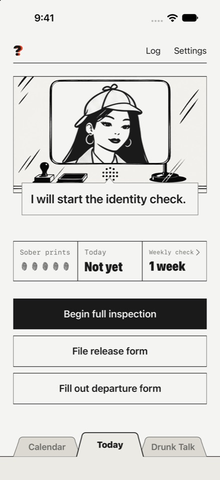
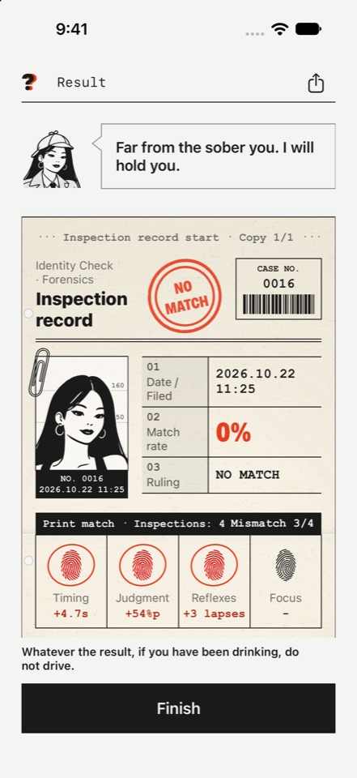

저 맞아요? / Still You? 지원
앱 소개
'저 맞아요?'는 술자리에서 맨정신일 때의 나와 오늘의 나를 비교하는 iPhone 앱입니다. 술버릇을 돌아보고 바꾸고 싶은 성인을 위해 만들었습니다. 맨정신일 때 짧은 심사 4개(타이밍, 판단력, 반사신경, 집중력)를 한 번 해서 기록을 만들고, 술자리에서 같은 심사를 다시 해서 평소 기록과 얼마나 다른지 도장으로 보여 줍니다. 한국어와 영어로 쓸 수 있습니다.
음주 측정기가 아니며 혈중알코올농도를 추정하지 않습니다. 운전해도 되는지도 판단하지 않습니다. 술을 마셨다면 운전하지 마십시오. 기록은 사용자 기기에만 저장되고 계정이 필요 없습니다.


화면의 기록과 사진은 예시입니다.
앱은 App Store 출시를 준비 중입니다. 이후 버전에서 앱 안에 제휴 링크(예: 해외 건강식품 쇼핑몰)가 표시될 수 있고, 링크로 구매가 이뤄지면 운영자가 수수료를 받을 수 있습니다.
지원
앱 사용 중 문제가 있거나 궁금한 점이 있으면 메일로 알려 주십시오.
연락처: d12hstudio@gmail.com
자주 묻는 것
- 기록은 어디에 저장됩니까? 이 기기에만 저장됩니다. 운영자는 볼 수 없습니다.
- 기록을 지우려면? 설정의 "모두 삭제"를 누르거나 앱을 지우십시오.
- 기록을 옮기려면? 설정의 내보내기로 파일을 만들고, 새 기기에서 가져오기로 읽으십시오.
- 음주 측정기입니까? 아닙니다. 혈중알코올농도를 추정하지 않으며 운전해도 되는지 판단하지 않습니다. 술을 마셨다면 운전하지 마십시오.
About (English)
Still You? is an iPhone app that compares the sober you with tonight's you. Take four short inspections while sober to build a baseline, then repeat them on a night out and the app stamps how far tonight's scores are from your own records. It is not a breathalyzer, does not estimate blood alcohol, and does not tell you whether you can drive. If you have been drinking, do not drive. No account is needed and records stay on your device.
The app is being prepared for the App Store. A later version may show affiliate links inside the app, and the operator may earn a commission on purchases made through them.
Support (English)
Questions or problems: d12hstudio@gmail.com. Records stay on your device. To remove them, use "Delete all" in Settings or delete the app.